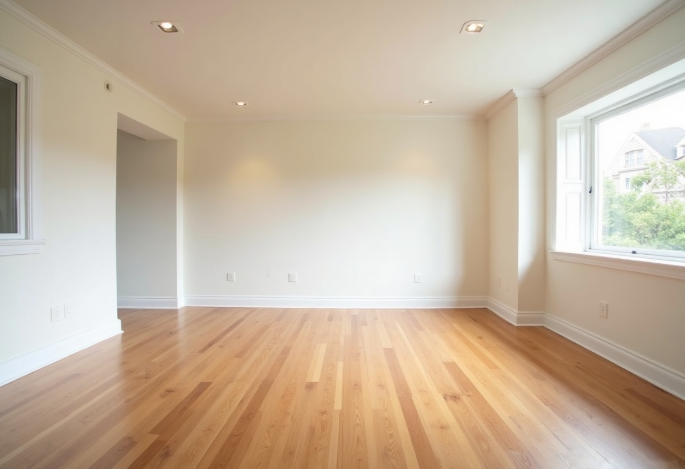
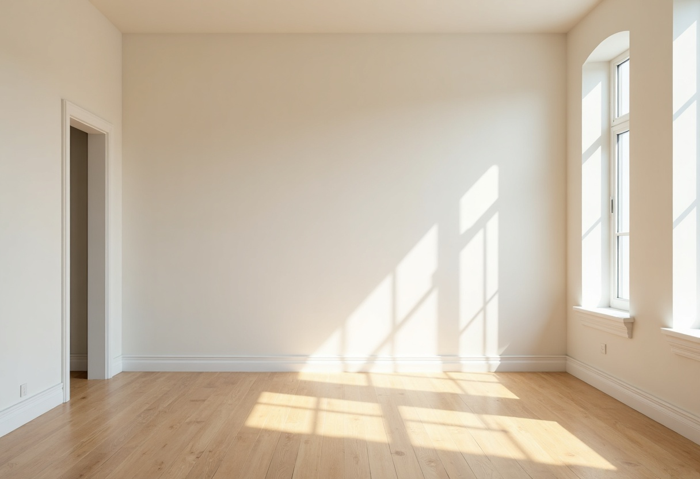
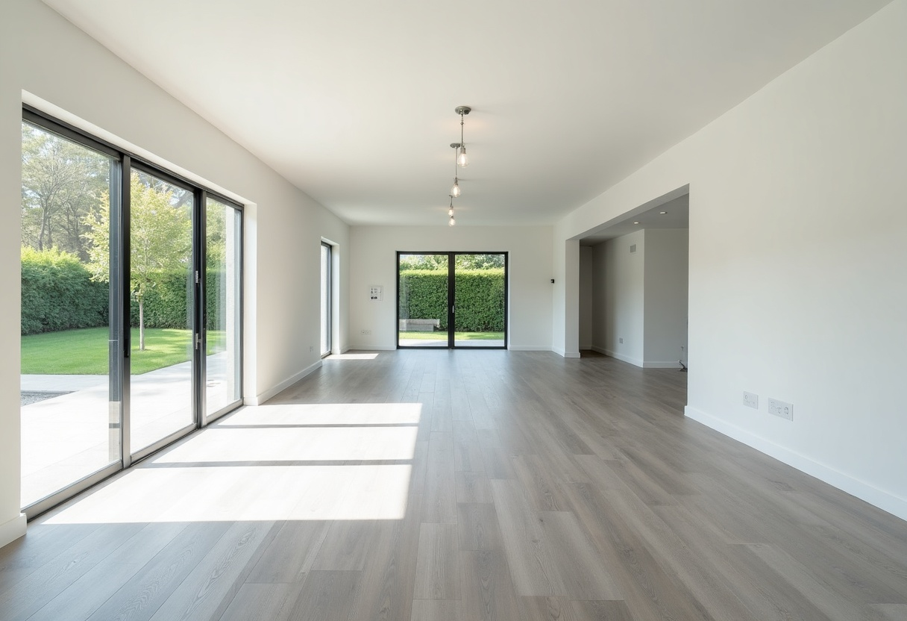
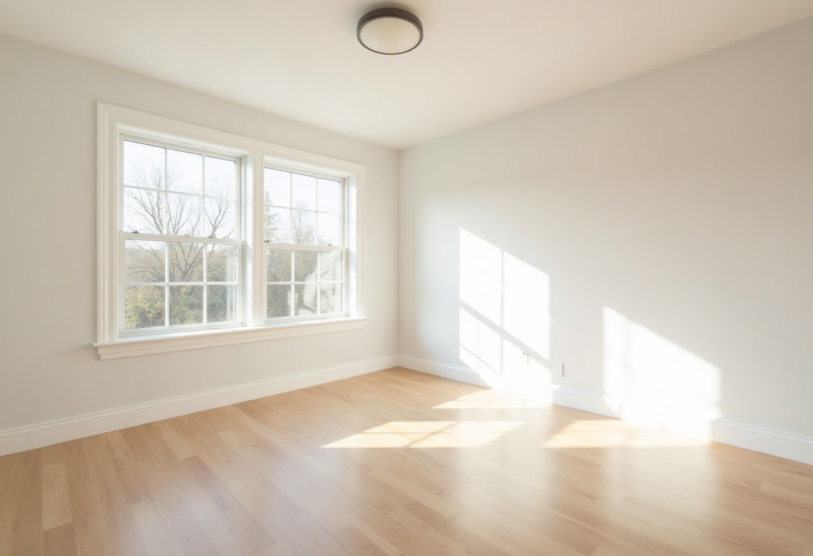
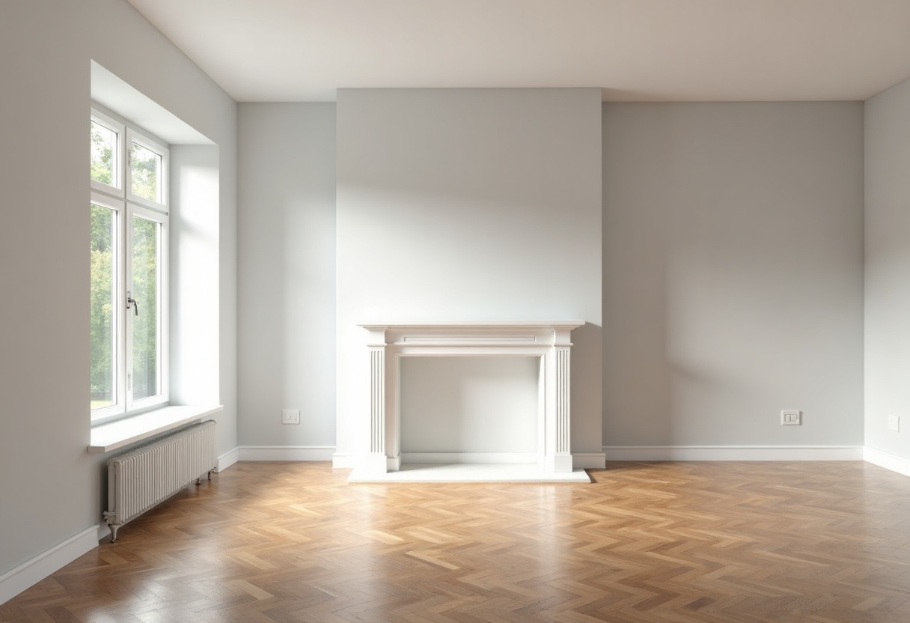
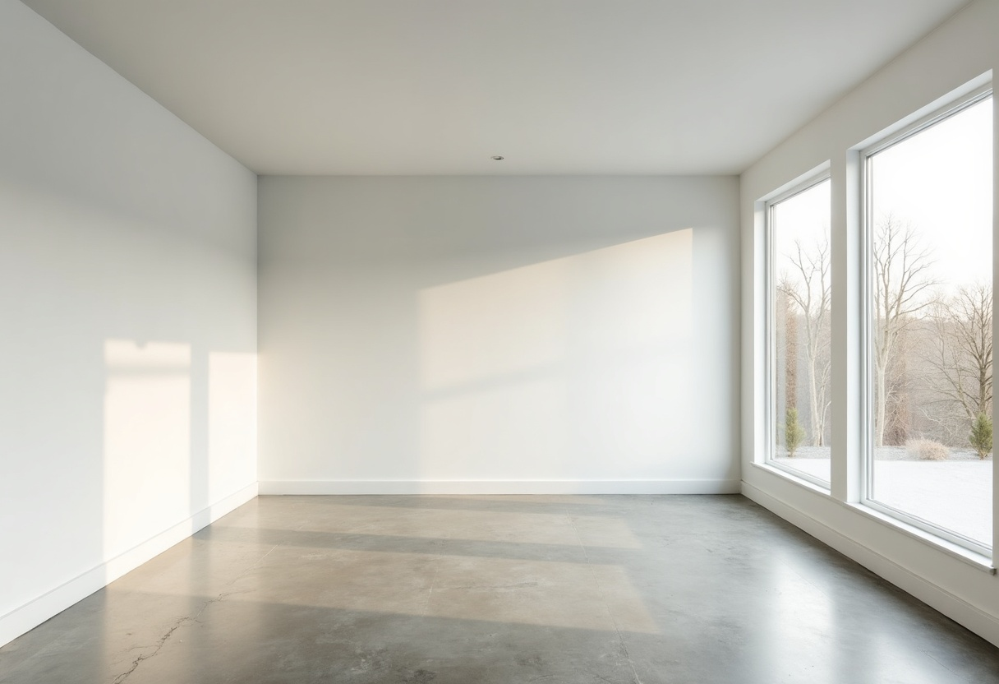

1 · Living room, oak floor
The most uncommitted room of the six, which is exactly what a 100-variation pool needs. Warm oak, plain white walls, no period detail and no material that argues with a style.
Biggest clear floor of any candidate with a normal room scale, one large blank focal wall dead centre, and the doorway on the left plus the second window keep it reading as a real photograph. Light is soft and directional with no hard shadow pattern on the floor — the failure mode that hurts most.
It also works as a living room or a bedroom, so it doesn't lock the copy into one room type.
Watch: a slightly warm/yellow cast and a soft, empty ceiling. Both are fixable on a regenerate pass if you want it cooler.

5 · Bedroom, tall windows
The best focal wall in the set — a wide, completely blank, well-lit wall that a bed or a sofa would sit against perfectly. Light oak and off-white are as neutral as candidate 1, and the arched windows give it more character.
Watch: the sun patch. There's a large soft diagonal of light across the main floor area, which is where furniture goes. It's soft enough to probably be fine, but it is the one thing separating this from candidate 1.
Pick this one if you want the section to be explicitly about bedrooms.

3 · Open plan, garden doors
Enormous clear floor and a genuinely attractive photo. The garden through the sliding doors gives it life that the others don't have.
Watch: scale. It's a big open-plan volume, so any single furniture group looks marooned in it, and the room type is ambiguous — is this a living room or a dining room? That ambiguity makes the staged results harder to judge as right or wrong, which is the opposite of what a demo wants.

2 · Bedroom, corner windows
Bright and clean, and the pale floor is nicely neutral.
Watch: this is the hard-shadow problem in its clearest form. There are crisp window-pane shadows on both the focal wall and the floor. Put a bed against that wall and the shadow either has to vanish or fall across the headboard, and a lot of the pool will look composited. Also the tightest room here.

4 · Living room, fireplace
The best-looking photograph of the six by some distance. Herringbone parquet, a proper mantel, a cast-iron radiator under the window.
Watch: every one of those details is a style commitment. This room is already traditional/European, so Coastal, Midcentury and Scandinavian all end up fighting the architecture. It would make a lovely single before/after and a poor 100-variation pool — which is precisely the tradeoff this section is trying to avoid.

6 · Modern, concrete floor
Clean and architectural, with the most dramatic window wall.
Watch: polished concrete is a stronger style signal than the fireplace in candidate 4 — it says loft/industrial before anything is placed in it. The bare winter trees outside also make it read cold, which fights the warm styles. Floor is very plain, so staged results will all look similar.